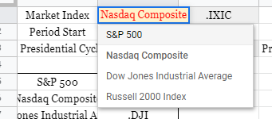
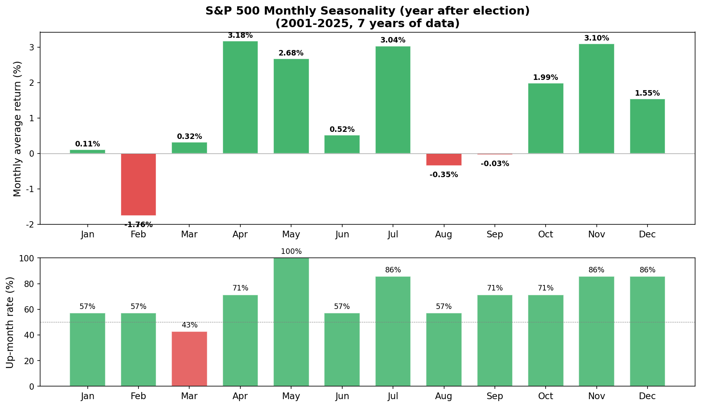
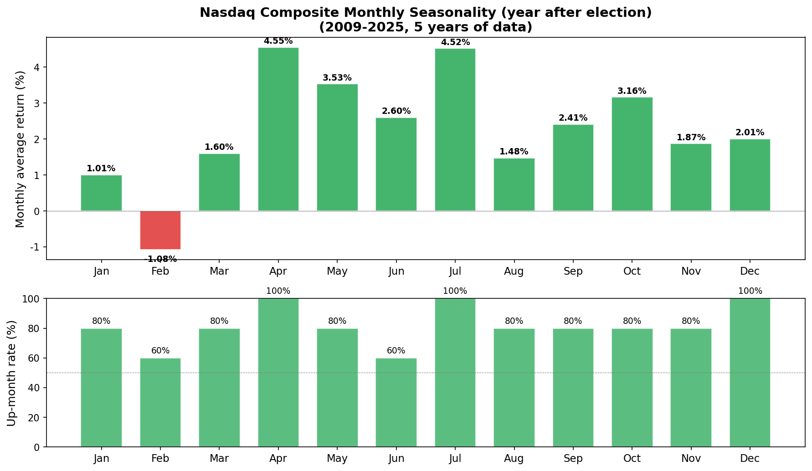
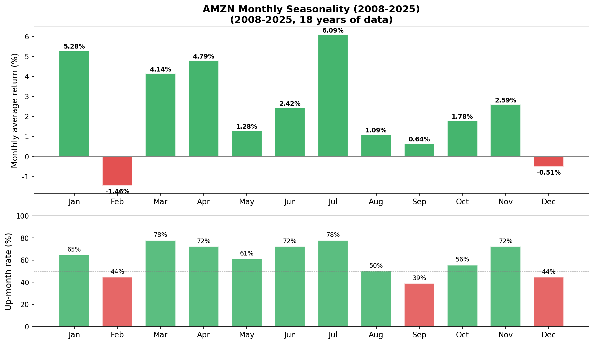
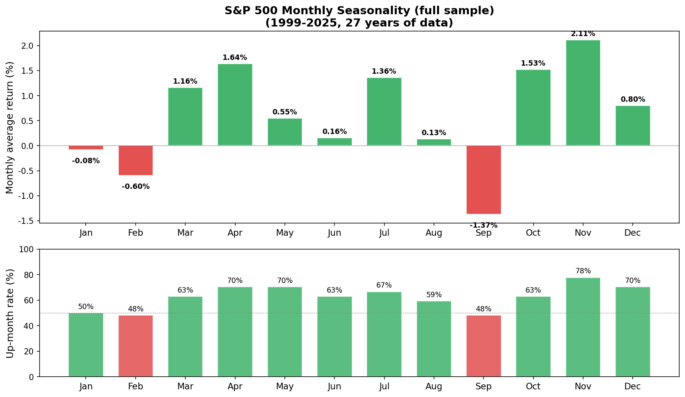

The Almanac Trader — Seasonality Analysis¶
What seasonality is¶
Seasonality is the historical tendency of prices to rise or fall around specific dates or months. The classic example is the January Effect — the observation that small-cap stocks have a tendency to rally in January.
The Stock Trader's Almanac 2021, considered required reading for short-term traders, lays out this kind of seasonality data in detail.
What did the Nasdaq Composite do on February 1st historically, between 1999 and 2020?
The answer: February 1st was an up day 76.2% of the time — roughly 7.6 out of every 10 years.
You can build this kind of seasonality table yourself with nothing more than historical price data.
Google Sheets version¶
Copy the Almanac Trader template: Google Sheets link
In the sheet, you can change three filters to slice the analysis any way you want:

| Filter | What it does | Example |
|---|---|---|
| Market Index | Index or ticker to analyze | S&P 500, Nasdaq, AMZN, etc. |
| Period Start | Start year of the data window | 1999, 2008, etc. |
| Presidential Cycle | Filter by presidential election cycle | All, Election Year+1, etc. |
Presidential cycle¶
There's a long-standing observation that the U.S. four-year presidential cycle leaves a footprint on the market — new-administration policy shifts, fiscal-spending changes, and so on. Historically the year after an election (Election Year + 1) has been the weakest year of the cycle. This filter lets you isolate just the years that match a specific stage of the cycle when computing seasonality.
How to read the seasonality chart¶
The chart has two parts:
| Section | What it shows |
|---|---|
| Top (cumulative log return — returns transformed into a form you can sum) | The yearly return trend. An upward slope means the period was historically positive. |
| Bottom (up-day rate) | The probability that this date was an up day. Above 50% (green) = mostly up; below 50% (red) = mostly down |
Use this data as a guide to directional tendency for a date, not as a literal expected return.
Python version¶
You can run the same analysis in Python without the Google Sheets limits. Pull data with yfinance, then compute the seasonality.
S&P 500 — year after a presidential election (2001–2025)¶

Nasdaq Composite — year after a presidential election (2009–2025)¶

AMZN (2008–2025)¶

S&P 500 — full sample (1999–2025)¶

Core Python code
import numpy as np
import pandas as pd
import yfinance as yf
# Pull data
data = yf.download("^GSPC", start="1999-01-01", end="2025-12-31")
data['log_return'] = np.log(data['Close'] / data['Close'].shift(1))
# Filter to year-after-election
election_years = set(range(2000, 2025, 4))
valid_years = {y + 1 for y in election_years}
data = data[data.index.year.isin(valid_years)]
# Compute seasonality by month/day
data['month'] = data.index.month
data['day'] = data.index.day
seasonality = data.groupby(['month', 'day']).agg(
win_rate=('log_return', lambda x: (x > 0).mean() * 100),
log_return_sum=('log_return', 'sum')
)
The uncomfortable truth about seasonality¶
Most "patterns" don't survive on out-of-sample data¶
When you first see a seasonality table, the temptation is "I can trade this." Honest version:
- Most patterns you find in historical data are coincidence. Flip a coin 1,000 times and you will see a stretch of "7 heads in a row" — calling that "this coin lands heads every 7th flip" is the same mistake. With 252 trading days × 26 years = 6,552 data points, finding "this date was up 76% of the time" isn't hard. But the probability that the same pattern repeats next year is barely better than chance.
- "Sell in May": it's true that November–April outperforms May–October on average, but trading on this rule (in and out twice a year) typically underperforms simple buy-and-hold once you account for trading costs and timing slippage.
- March 2020: the COVID crash (−34%) happened during the "safe" Nov–Apr stretch.
Why bother, then?¶
If patterns break, why look at them? Because they provide context.
| Situation | Role of seasonality |
|---|---|
| Other signals (VIX, technical analysis) point the same direction | Adds confirmation |
| A historically weak month (September) gets an extra bear signal | Strengthens the "play defense" call |
| Entering during a historically strong stretch (November–January) | Eases the psychological friction of timing |
In-sample vs out-of-sample: what does it actually look like?¶
Compare S&P 500 monthly average returns split between 1999–2015 (in-sample) and 2016–2025 (out-of-sample):
| Month | In-Sample (99–15) | Out-of-Sample (16–25) | Sign match |
|---|---|---|---|
| Jan | −1.01% | +1.41% | ✗ |
| Feb | −0.63% | −0.54% | ✓ |
| Mar | +1.74% | +0.18% | ✓ |
| Apr | +1.95% | +1.11% | ✓ |
| May | +0.01% | +1.46% | ✓ |
| Jun | −0.84% | +1.85% | ✗ |
| Jul | +0.18% | +3.37% | ✓ |
| Aug | −0.33% | +0.92% | ✗ |
| Sep | −1.39% | −1.34% | ✓ |
| Oct | +2.04% | +0.66% | ✓ |
| Nov | +0.92% | +4.15% | ✓ |
| Dec | +1.20% | +0.13% | ✓ |
Sign match: 9/12 (75%) — better than a coin flip (50%), but January, June, and August completely flipped sign. The reversal of the famous "January Effect" out of sample is especially worth noticing.
Seasonality on its own is barely better than a coin flip; combined with other tools, it's useful context.
Presidential-cycle characteristics¶
| Cycle year | Profile | Historical average |
|---|---|---|
| Election year (Year 0) | Incumbent-friendly policy, market-supportive | Tends up |
| Year +1 (year after election) | Weakest year — new administration adjusts | Generally weak |
| Year +2 (midterm year) | Peak political uncertainty | Tends to bottom mid-year, rally in H2 |
| Year +3 (pre-election year) | Stimulus into the election cycle, strongest year | Strong |
Wrap-up¶
Seasonality is a tendency in historical data — it doesn't guarantee anything about the future. But patterns that appear consistently across decades are worth knowing about:
- Use it as a reference, not a trade signal: combine with VIX, technical analysis, and other tools.
- Per-ticker direction matters: a long-term uptrend stock like AMZN will have a very different seasonality than a long-term downtrend stock like XOM.
- Patterns can break: 2020 COVID and the 2008 GFC both produced crashes during "safe" periods.
- The biggest value: knowing that "historically, this date has tended to do X" gives you context — not a forecast.
References¶
Previous: Monte Carlo Simulation Backtesting | Next: Calculating GEX Yourself — Google Sheets + Python